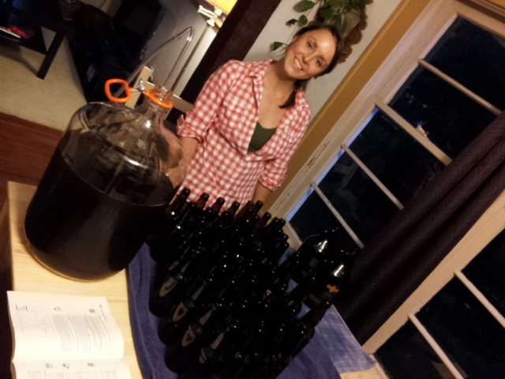
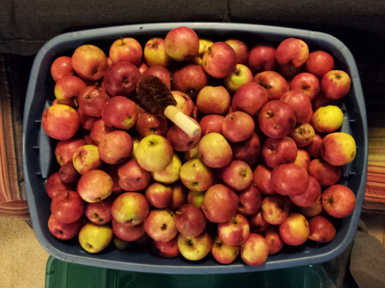
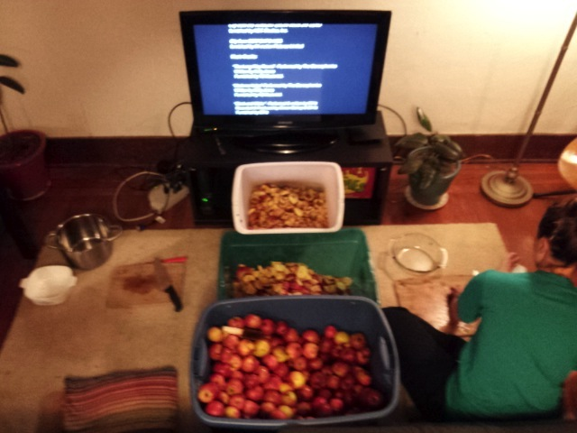
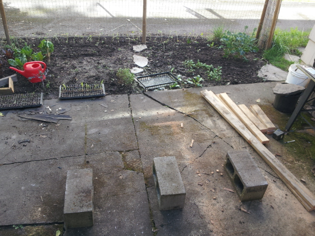
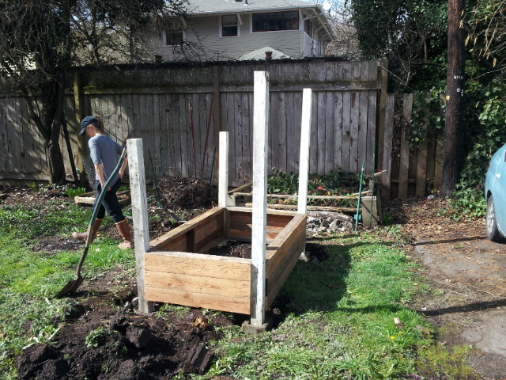
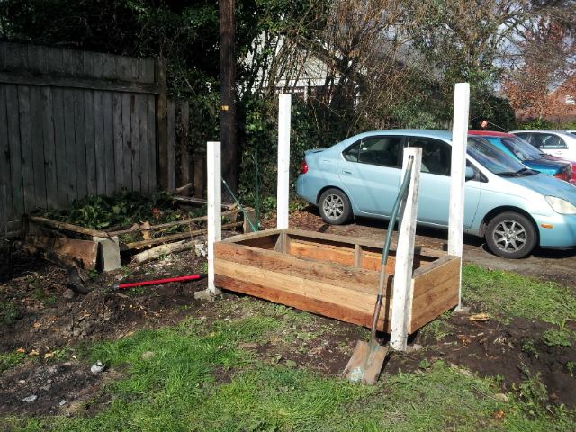
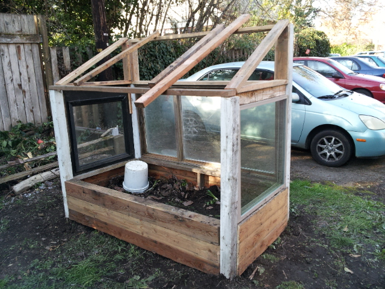
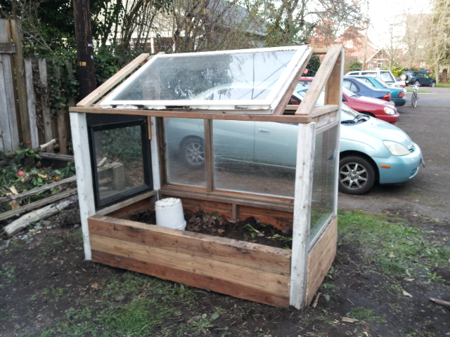
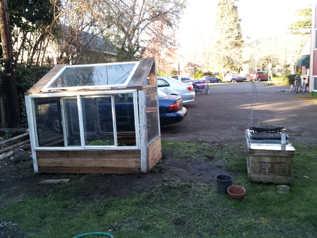
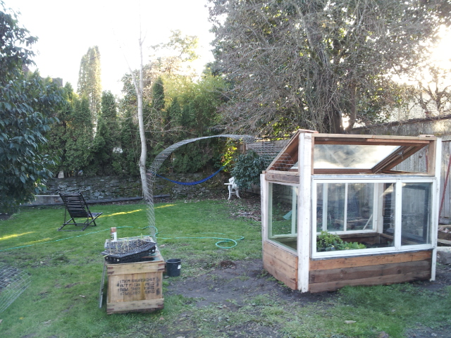

Homebrewing
My fiance and I started homebrewing recently and it's a lot of fun! It can really be as simple or as complicated as you'd like, so the barrier to entry is relatively low, and there are a ton of places you can go to checkout how-tos and tutorials. We were lucky and friend of ours was getting rid of his basic brewing kit. In this kit he had a 6.5 gallon carboy, a carboy brush, and ingredients for a simple Amber Ale. After we picked this up we went over to the local brew supply shop and picked up the rest of what we needed. All in all our kit came together and our basics included:
- 6.5 Gallon Carboy
- 80 Gallon/30 Liter Fermenter
- Hydrometer
- Airlock and plug
- Bottle brush
- Bottle caps
- Ingredients for a simple Amber Ale
We ended up borrowing a 10 Gallon Kettle for our first batch since we weren't able to get ahold of one for a nice enough price.
Batch #1 - Amber Ale
September 24th, 2013
We started with a really simple Amber Ale since we also happened to have most of the ingredients to start with from our friend. Generally speaking, amber ales are a good beginner beer to brew. So using the 10 gallon kettle we borrowed from another friend, we began brewing this batch on Jessica's birthday, September 24th! It took us about 5 hours, and we did it all in our kitchen on our stove... not a great idea. We threw it into primary fermentation in our big 8 gallon fermenter at about midnight that night.
After about 3 days, we weren't seeing much fermentation happening so we went out and purchased some more yeast and we pitched a second time, making sure to churn the wort A LOT to get as much oxygen as possible in there. We even sanitized a 1/4 gallon measuring cup, scooped and poured in big exaggerated motions to get it nice and oxygenated. After about another 4 days, we moved for batch from primary fermentation to secondary fermentation (more accurately, 'clarification') in the 6.5 gallon carboy. We did not add more yeast, because the idea with secondary fermentation a lot of the time is to actually clear up the muck in the wort, allowing fermentation to truly and fully complete. Therefore, this process is often called 'clarification' because it is the act of the liquid becoming clearer that is the primary goal here.
Finally after about 1 more week, we decided it was about time to bottle! We bought some priming sugar, heated it up in water on the stove and mixed it right into the carboy. Many people will move the batch from the carboy to another container before doing this, but we didn't have another clean container. After mixing in the priming sugar, we cleaned the bottles we had gathered that day. Then we filled up the bottle, all in all filling 38 12oz and 7 22oz bottles.
As of this writing, the bottles have only been sitting for about 3 days, and they should have about another week to go!
 Batch #2 - Hard Apple Cider
September 30th, 2013
We had so much fun making the Amber Ale that Jessica had the idea of making our very own hard cider! When you look around online for tutorials on how to make hard apple cider, you'll find a variety of opinions and advice, and one of the most common pieces of advice for beginners is to just go out and buy 5 gallons of apple cider from the store and ferment it. We decided that we'd rather go out and make our own from scratch, so with little warning we went out looking for apple trees. After about a half hour of looking, we happened upon an apple tree that had fallen over in a recent storm. Luck us! We hoped out and gathered as many as we could, about 50 lbs.
When we brought our loot home, we threw it into the bathtub and cleaned them all in a big vinegar bath... there are some studies that Jessica found that show how a vinegar bath can sanitize to some degree. We then took the apple in front of the tv and began chopping of the bad parts, and getting them ready to juice (no we didn't use a cider press, though we probably should have). Total it was probably about 3 hours total of chopping and 1.5 hours of juicing before we were finished. We ended up with about 2.5 gallons of juice... pretty good considering we hadn't purchased a dime.
After all the juicing, the next step was to pasturize the juice by heating up to 155 degrees farenheit for 10 seconds. After that we threw in some Caspian yeast killer. This might sound counter intuitive, but if you're using wild fruit, there is bound to be lots and lots of wild yeast in it, which you do not want. After a few days of sitting with the Caspian yesat killer, Jessica pitched our own yeast and threw them into primary fermentation. What we hadn't realized before this whole process was that a typical hard apple cider will take 3 to 6 MONTHS to fully ferment. Therefore, we didn't want to use up our 6.5 gallon carboy, leaving it free for our next batch of brew, and so Jessica devised the clever solution of using half gallon growlers and throwing airlocks on them. The apple juice was thrown intro primary fermentation on Friday, October 4th, 2013.
As of this writing, the growlers are still sitting in primary fermentation and we are hoping to have an awesome batch! Hopefully 3 to 6 months is enough to make some delicious hard apple cider!
Greenhouse
      March 3rd, 2013
We made an awesome greenhouse out of recycled materials! We pad maybe $45 total for any used and new material.